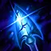
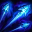

애쉬 (Ashe)
원거리/서포터 / 난이도: 하
스킬
-

패시브 서리 화살애쉬의 기본 공격과 스킬이 대상을 2초간 둔화 시킵니다. 기본 공격이 추가 피해를 입힙니다. 애쉬의 치명타는 추가 피해를 가하지 않는 대신, 둔화 효과를 늘려 줍니다. 둔화 효과는 점차 원래대로 돌아옵니다.
-
Q 궁사의 집중
기본 지속 효과: 애쉬가 기본 공격 시 4초 동안 유지되는 중첩이 1회 쌓입니다. 4회 중첩 시 이 스킬을 사용할 수 있습니다. 사용 시: 6초 동안 애쉬의 공격 속도가 오르며 기본 공격이 강화된 피해를 입힙니다.
-

W 일제 사격애쉬가 몇 개의 화살을 일제히 쏴 각각 물리 피해를 입힙니다. 적들은 일제 사격의 여러 화살에 맞을 수 있지만, 그중 첫 번째 화살에만 피해를 입습니다.
-
E 매 날리기
애쉬가 매를 맵 어느 위치든 날려 보내 5초 동안 시야를 확보합니다. 매는 날아가는 동안 주변 지역을 드러냅니다. 이 스킬은 2회까지 충전됩니다
-
R 마법의 수정화살
애쉬가 얼음 수정 화살을 발사하여 처음으로 맞힌 챔피언에게 마법 피해를 입히고 기절기절시킵니다. 기절기절 지속시간은 화살이 날아가는 거리에 비례하여 3.5초까지 증가합니다. 주변의 적들은 같은 양의 마법 피해를 입고 서리 화살의 둔화를 적용합니다.
배경 스토리 요약
아바로사 부족의 냉기의 화신이자 전쟁의 어머니인 애쉬는 북방에서 가장 규모가 큰 군단을 이끌고 있다. 절제력이 뛰어나고 총명한 데다 이상주의적인 면을 갖추고 있지만 지도자라는 역할을 부담스러워하기도 한다. 고대 마법의 힘이 흐르는 혈통을 이어받았기에 얼음 정수의 활을 무기로 사용할 수 있다. 아바로사 부족민들은 애쉬가 전설 속 영웅 아바로사 여왕의 화신이라고 굳게 믿으며, 애쉬는 이들과 함께 먼 옛날 자신의 부족이 살았던 영토를 되찾아 다시 한 번 프렐요드를 통일하려 한다.